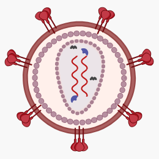
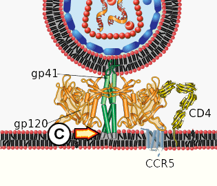
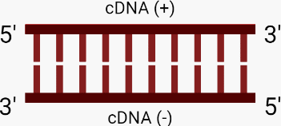
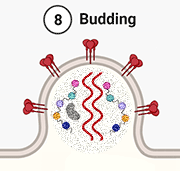

HIV 
Introduction
The central dogma of molecular biology [1] states that genetic information moves only in one direction, from DNA to RNA to protein. However, in the 1970s the discovery of reverse transcription, which converts RNA to DNA, required the dogma to be restated as: once the biological information is translated into protein, it is not possible to go the other way.
Reverse transcriptase (RT), the enzyme that catalyses reverse transcription, has now been found in all branches of life: bacteria, archaea, eukaryotes and viruses. HIV is one of the viruses that use RT as part of its strategy of replication.
Classification
The Baltimore Classification [2] of HIV is Group VI (+) ssRNA-RT.
-
The ' (+)' denotes that the RNA is positive sense, meaning that it runs in the 5' to 3' direction.
-
'ss' tells us that it is single-stranded.
-
Note that 'RT' here stands for 'retrovirus', i.e. a virus that uses reverse transcription.
Structure
Image created with BioRender.com
-
Spike proteins are embedded in the lipid membrane, gp120 being the tip of the spike and gp41 the stalk.
-
A matrix protein protects the capsid.
-
The capsid contains:
-
The genomic material, i.e. two [3] strands of ssRNA (+),
-
Reverse transcriptase (RT), which synthesises complementary DNA (cDNA) from the RNA,
-
Integrase, which incorporates viral cDNA into the host cell's DNA, and
-
Life-cycle
Image adapted from “HIV Replication Cycle”, by BioRender.com (2021). Retrieved from https://app.biorender.com/biorender-templates
-

1. Binding. The viral spike protein gp120 binds to the Helper T-cell's CD4 receptor. This causes a conformational change in the CD4 receptor, binding gp120 to the CCR5 co-receptor.
-
2. Fusion. The binding of gp120 and CCR5 enables the stalk of the spike (gp41) to pierce the T-cell's membrane. This pulls the virus and host membranes together until the virus fuses with the host cell. The inner contents of the virus are then released into the cell, and the matrix and capsid proteins dissolve, releasing the viral RNA, and the RT and integrase enzymes into the cytoplasm.
More detail on binding and fusion
-
A. Initial interaction between gp120 and CD4 protein.
-
B. Conformational change in gp120 allows for secondary interaction with CCR5.
-

C. The distal tips of gp41 are inserted in to the cellular membrane.
-
D. gp41 undergoes significant conformational change, folding in half and forming coils. The viral and cellular membranes pull together, fusing them in the process.
Images and text adapted from HIV Membrane Fusion Panel by Mike Jones, licensed under Attribution-ShareAlike 3.0 Unported
-

3. Reverse transcription.
More detail on Reverse Transcription
RT is an enzyme composed of distinct domains that exhibit different biochemical activities. The predominant functions of RT are RNA-dependent polymerase activity and RNase H activity. However, as is the case with HIV, DNA-dependent DNA polymerase activity is also a possibility. The process of reverse transcription involves the following steps:
-
A. Viral RNA (+).
-
B. Using an RNA fragment as a primer, RT binds to the RNA (+) template, initiating RNA-dependent DNA polymerase activity which synthesises the complementary DNA (cDNA (-)) strand via the incorporation of dNTPs.
-
C. Concurrently with cDNA (-) synthesis, RNase H activity denatures (degrades) the RNA template.
-
D. Again using an RNA fragment as a primer, DNA-dependent DNA polymerase recognises the single-stranded cDNA (-) as a template and synthesises the second, positive (+) strand of cDNA.
-

E. The primers are removed, resulting in double-stranded cDNA (+-).
Images created with BioRender.com.
-
4. Integration. The integrase enzyme transports the viral DNA through a pore in the nucleus to the host DNA. Integrase then makes a nick in the host DNA and inserts the viral DNA into it.
-
5. Transcription. Host cell RNA polymerase transcribes strands of viral RNA (+), destined for the budding virion (and which are therefore not to be translated) and messenger RNA (mRNA) which will be translated into polyprotein chains. The transcribed RNA exits via nuclear pores into the cytoplasm.
-
6. Translation. Ribosomes attach to the mRNA strands which are then translated into:
-
A. envelope proteins (gp120 and gp41), which embed themselves in the cell membrane, and
-
B. polyprotein chains, containing the building blocks of the matrix, capsid, RT and integrase enzymes. Protease cleaves itself from the polyprotein chain before entering the virion.
The polyprotein chains, protease, and two strands of viral RNA (+) then move towards the virion which has already begun to bud from the cell envelope.
-
-
7. Viral envelope formation. The viral spike proteins embed themselves in the host cell membrane.
-

8. Budding. Once all the viral materials have entered the virion, it buds from the host cell.
-
9. Release and Maturation. After budding, the protease cleaves the polypeptide chains into matrix and capsid proteins, integrase and RT. Once these elements have been assembled the virus has reach maturation and is now ready to infect another cell.
The Target of HIV: the Helper T-cell
The virus mainly targets Helper T-cells [6] (also known as Helper T lymphocytes or CD4+ cells). These cells are crucial for the functioning of the adaptive immune system.
Helper T-cells do not attack pathogens directly. Instead, they:
-
bind to T-lymphocytes, stimulating them to differentiate into specialised T-cells, e.g. cytotoxic cells,
-
bind to B-lymphocytes, inducing differentiation into plasma cells, and memory B cells (which produce and store antibodies)
-
release chemicals (cytokines), stimulating defence responses in macrophages, neutrophils, basophils and other cells.
Effect on the T-cell
If the viral DNA embedded in the T-cell genome remains inactivated, generations of mitosis will ensure that it is passed on to generations of daughter cells. Once the viral DNA is activated, large numbers of virions will be produced, and their continual budding will cause the cell to lyse (burst). Other factors contribute to the death of infected T-cells, e.g. apoptosis (programmed cell death) caused by the detection of the viral DNA by specialised host cell proteins.
The result of the death of large numbers of T-cells will be the gradual degradation of the host organism's immune response. As this continues to weaken, the host organism will be rendered ever more vulnerable to a myriad of opportunistic infections which, without treatment, will lead to its death.
AIDS
AIDS stands for Autoimmune Deficiency Syndrome, the umbrella term for the multiple infections that take advantage of the breakdown of the immune system .
While AIDS usually proved fatal in the past, in recent years many drugs have been developed to neutralise the various stages of viral infection. The activities of these drugs include :
-
causing conformational changes in the spike proteins, disallowing the initial docking of the virion with the host cell receptors,
inhibiting RT to stop reverse transcription,
-
inhibiting integrase to stop transport and integration of the viral DNA into the host genome, and
inhibiting the translation of viral DNA into mRNA.
A cocktail of these drugs is often required to successfully treat a sufferer, acting on the principle that if one fails, another will succeed.